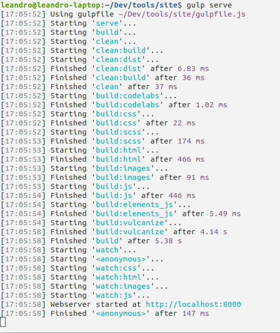
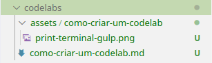
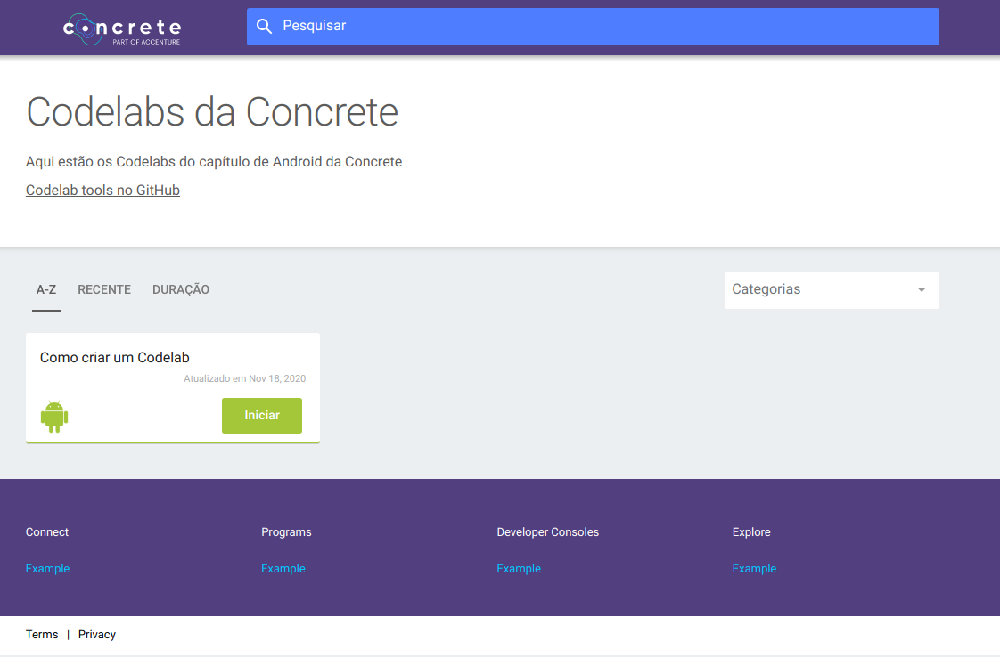
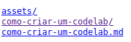
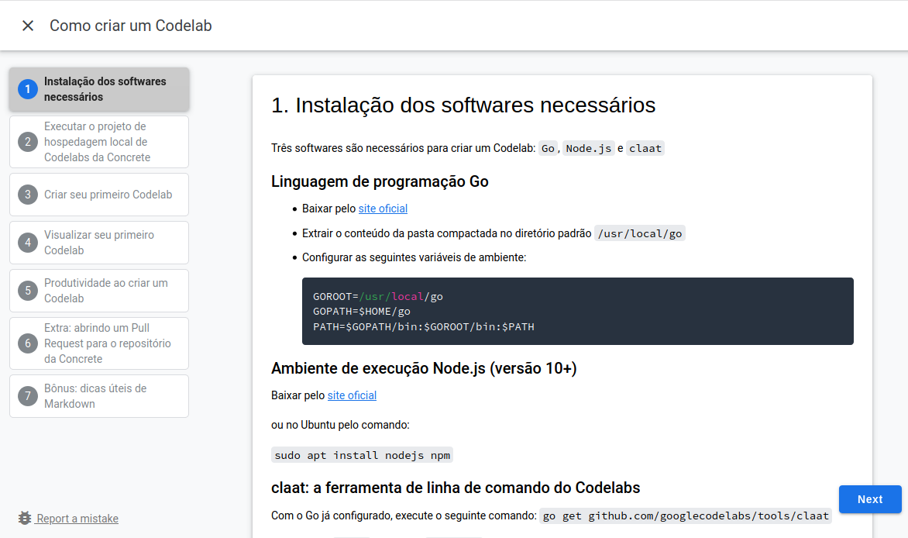
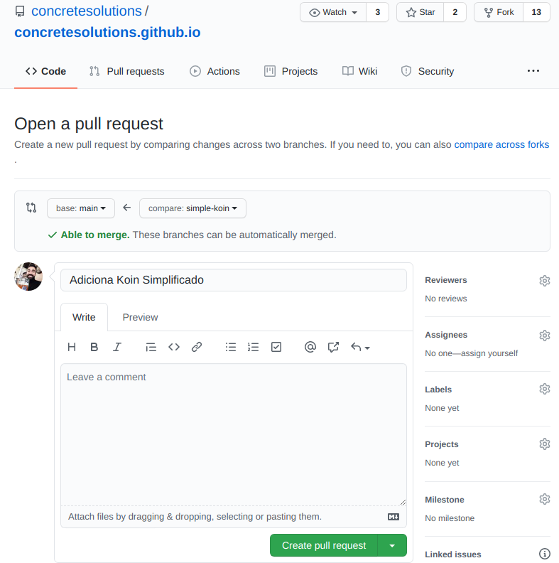

Três softwares são necessários para criar um Codelab: Go, Node.js e claat
Linguagem de programação Go
- Baixar pelo site oficial
- Extrair o conteúdo da pasta compactada no diretório padrão
/usr/local/go - Configurar as seguintes variáveis de ambiente:
GOROOT=/usr/local/go GOPATH=$HOME/go PATH=$GOPATH/bin:$GOROOT/bin:$PATH
Ambiente de execução Node.js (versão 10+)
Baixar pelo Ubuntu com os comandos:
$ curl -sL https://deb.nodesource.com/setup_lts.x | sudo -E bash -
$ sudo apt install nodejs
claat: a ferramenta de linha de comando do Codelabs
Com o Go já configurado, execute o seguinte comando:
go get github.com/googlecodelabs/tools/claat
O binário do claat estará em ~/go/bin. Caso seja necessário, dê permissão de execução ao arquivo com o comando chmod +x claat
- Clonar o projeto através do comando
git clone https://github.com/concretesolutions/concrete-codelabs.git - Ir até o diretório raiz do projeto clonado
- Executar o comando
npm installpara instalar as dependências do projeto clonado - Executar o comando
sudo npm install -g gulp-clipara instalar globalmente oGulp, automatizador de tarefas em JavaScript responsável por preparar e servir o projeto localmente - Executar o comando
gulp servepara servir localmente o projeto no endereço padrãohttp://localhost:8000
 - Acessar o endereço
http://localhost:8000no navegador e ver o site hospedado localmente

Criando o Codelab
Começamos criando um arquivo Markdown no diretório codelabs dentro do diretório raiz do projeto
$ touch meu-primeiro-codelab.md
Obs.: evitar usar espaços e caracteres especiais no nome do arquivo
Estruturando o Codelab
Um Codelab possui uma estrutura básica encabeçada por seus dados de identificação. Para criar um Codelab, basta seguir o modelo:
summary: Meu Primeiro Codelab
id: meu-primeiro-codelab
categories: Android
tags: android, tutorial, codelab
status: Published
authors: Leandro Leite
Feedback Link: http://github.com/cs-leandro-leite
É uma boa prática que a id do seu Codelab seja igual ao nome do seu arquivo sem a extensão e o seu Summary seja a escrita natural da id/nome do arquivo.
O status: Published é padrão para todos os Codelabs que criaremos aqui, pois todos estarão em estado "Publicado".
O Feedback Link é um link usado para reportar bugs encontrados no codelab.
Adicionando conteúdo
O título do seu Codelab será definido pelo header principal do seu arquivo Markdown
# Meu Primeiro Codelab
Cada passo do seu Codelab será definido pelos headers secundários do seu arquivo Markdown
## Meu primeiro passo
Duration: 1
O campo Duration e seu valor são traduzidos como a duração do passo do seu Codelab em minutos. Caso esse campo seja descrito em todos os passos, o seu Codelab terá um tempo total estimado e isso será exibido ao leitor conforme o mesmo for avançando.
É possível fazer comentários no Markdown do seu Codelab usando comentários HTML
<!-- Esse é o primeiro passo do meu primeiro Codelab -->
## Meu primeiro passo
Duration: 1
Caso seja necessário usar imagens durante a criação do Codelab, opte por baixar e disponibilizar essas imagens em um diretório interno ao diretório assets com o mesmo nome do seu arquivo *.md

Resultado
Após toda a escrita, o seu Codelab deve ter uma estrutura parecida com este exemplo:
summary: Meu Primeiro Codelab
id: meu-primeiro-codelab
categories: Tutorial
tags: codelab, tutorial
status: Published
authors: Leandro Leite
Feedback Link: http://github.com/leanite
# Meu Primeiro Codelab
<!-- Esse é o primeiro passo do meu primeiro Codelab -->
## Meu primeiro passo
Duration: 1
Am ameno dore latiremo, me matiremo omenare reo latire. Me dimere matiro omenare ameno interimo reo dori latiremo. Emulari dori am reo adapare, imperavi me matiremo latiremo.
Me interimo reo dori am, matiremo dore dimere dori me. Reo emulari imperavi adapare latiremo, interimo dore am omenare. Omenare dimere me interimo matiro, dori imperavi latiremo matiremo. Interimo matiremo dore emulari adapare, am ameno latiremo dimere.
<!-- Esse é o segundo passo do meu primeiro Codelab -->
## Meu segundo passo
Duration: 3
Am ameno dore latiremo, me matiremo omenare reo latire. Me dimere matiro omenare ameno interimo reo dori latiremo. Emulari dori am reo adapare, imperavi me matiremo latiremo. Me interimo reo dori am, matiremo dore dimere dori me.
Reo emulari imperavi adapare latiremo, interimo dore am omenare. Omenare dimere me interimo matiro, dori imperavi latiremo matiremo. Interimo matiremo dore emulari adapare, am ameno latiremo dimere.
<!-- Esse é conclusão do meu primeiro Codelab -->
## Conclusão
Duration: 1
Tchau o/
Exportando seu Codelab
Após finalizar a escrita do seu arquivo Markdown, volte para o diretório codelabs e execute o seguinte comando:
$ claat export como-criar-um-codelab.md
Ao exportar o seu Markdown, o claat irá gerar um diretório com o mesmo nome do seu arquivo *.md com os arquivos do seu Codelab

Para servir novamente o site localmente, volte ao diretório site e execute o gulp com um parâmetro extra indicando o diretório codelabs, onde está o seu Codelab recém exportado
$ gulp serve --codelabs-dir=codelabs
Acesse novamente o endereço http://localhost:8000 no navegador e veja o site hospedado localmente exibindo o seu Codelab na página principal

Escrever um documento em Markdown pode trazer algumas surpresas no resultado final, mesmo com os plugins de pré-visualização de Markdown que existem em alguns editores de texto. Existe uma maneira de visualizar o resultado final do seu Codelab sem ter que fazer todos os passos necessários para publicação final.
Normalmente, escrevemos o arquivo *.md, usamos o claat para exportar e gerar o diretório com o arquivo *.html e reiniciamos o servidor que o Gulp está rodando. Podemos simplificar esse passo usando o comando claat serve no diretório codelabs. Esse comando faz com que o claat inicie um servidor local apenas para disponibilizar os Codelabs do diretório corrente, ignorando a estrutura do site que armazena os Codelabs.
$ cd codelabs
$ claat export como-criar-um-codelab.md && claat serve

O claat servirá o diretório codelabs no endereço http://localhost:9000 e abrirá uma nova aba no seu navegador automaticamente ao executar o comando claat serve.

Para visualizar o seu Codelab, basta clicar no diretório que foi exportado pelo claat

Obs.: o claat não possui hot reload, ou seja, toda vez que uma alteração for feita, é necessário parar o servidor, exportar novamente o arquivo *.md e iniciar o serviço novamente através do comando claat export como-criar-um-codelab.md && claat serve.
Primeiramente, precisamos incluir o arquivo *.md do Codelab que criamos na pasta codelabs do projeto de hospedagem local, o concrete-codelabs, que clonamos anteriormente.
Em seguida, devemos exportar esse Codelab executando o comando claat export [nome do meu markdown de codelab].md dentro da pasta codelabs como fizemos anteriormente.
Os arquivos que vamos submeter no Pull Request são os seguintes:
- Diretório com o Codelab convertido
- Pasta assets e as imagens do seu Codelab quando necessário
- O markdown do seu Codelab
- O
index.htmlque está no diretóriobuild
Copie esses arquivos, pois vamos abrir um Pull Request no repositório do site estático. Para isso, precisamos clonar o projeto do github.io através do comando git clone https://github.com/concretesolutions/concretesolutions.github.io.git
Já com o projeto clonado, crie uma branch a partir da branch main com o nome da ID do seu Codelab.
git checkout -b nome-do-meu-codelab
Em seguida, copie nessa branch recém criada os arquivos que separamos para subida no passo anterior. A nossa subida ficará parecida com este exemplo:

Podemos, então, adicionar os arquivos, commitar e realizar um push da nossa branch recém criada para o repositório remoto. Em seguida, precisamos ir até a parte de Pull Requests no GitHub do projeto e clicar em New pull request.

Finalmente, definimos a branch main como base e a nossa branch recém criada como compare. Revisamos o Pull Request para saber se está tudo certo e adicionamos um título significativo para que os avaliadores consigam entender do que se trata sem qualquer dificuldade. Se necessário, podemos incluir um breve comentário no campo disponibilizado.

Finalmente, clicamos em Create pull request e aguardamos que um avaliador aprove ou aponte possíveis correções no nosso Codelab.
Bons PRs, pessoal!😁